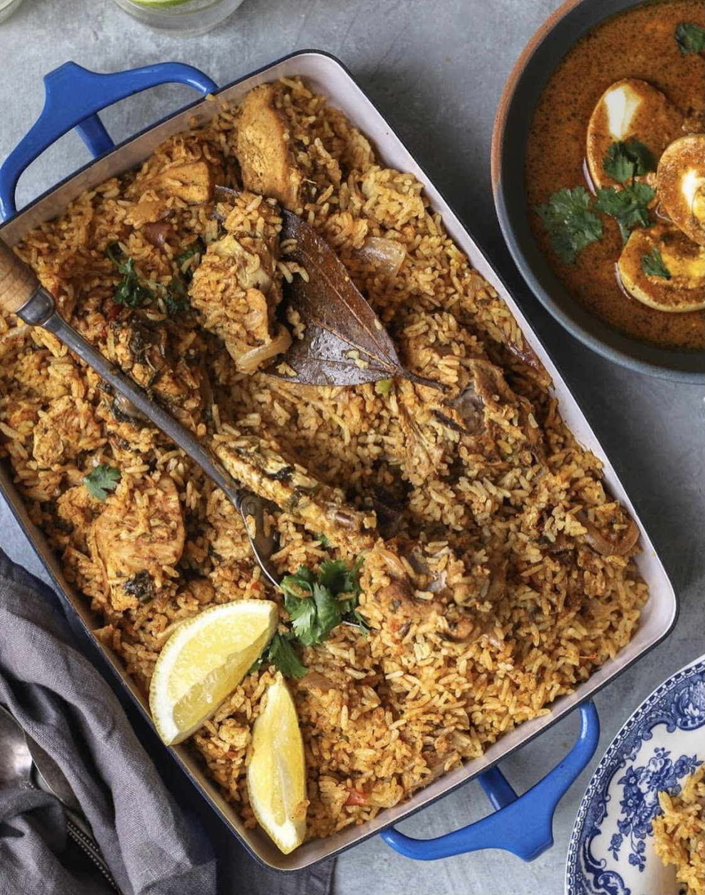

- 3 cups of seeraga samba rice
- 3 pounds or one whole chicken, cut to large chunks with bone
- 1 extra large red onion or 3 small onions, cut to lengthwise
- 10-15 red chilies
- 10 cloves garlic, peeled
- 2 inches ginger, peeled and chopped
- 4 small tomatoes, chopped
- 1 packed cup mint leaves, chopped
- ⅓ cup of veg oil
- 2 tbsp ghee
- 5 whole cardamom
- 3 cloves
- 1 inch cinnamon stick
- 2 bay leaves
- 1 black cardamom
- 1 star anise
- ½ cup full fat sour yogurt
- Juice of one lemon
- ⅓ tsp turmeric powder
- Salt
- 1 tbsp biryani masala
- 5 cups of water
Ambur Biryani
Ambur Biryani
Prep time: 1 hour
Cook time: 30 mins
Total time: 1 hour 30 mins
Author: Ash
Recipe type: Lunch, Dinner
Cuisine: Indian
Serves: 8
Ingredients
Instructions
- Wash the rice gently and soak for 30 minutes.
- Wash the chicken with turmeric, drain the water, and let it sit.
- Cut the onions lengthwise.
- In a bowl, add the red chilies, ginger, and garlic. Let them soak for 10 minutes in boiling water. Grind to a paste and set aside.
- Chop the tomatoes.
- Cut the mint and cilantro.
- Take a heavy-bottomed large pot to make the biryani.
- Add oil and ghee. Toss in the spices and make sure not to burn them.
- Add the onions and reduce the heat to medium. Cook the onions till they are almost crispy and super soft.
- Add the chilly paste. Saute and cook the paste until it loses the raw smell of ginger and garlic, which will take 5 to 10 minutes on low heat.
- Add the mint and cilantro and cook for another 2 minutes before adding the tomatoes. Cook the tomatoes for 2 minutes.
- Add the chicken, salt, biryani masala, and turmeric powder. Keep mixing and tossing the chicken very well and cook it until it’s about 70 percent cooked.
- Add the yogurt and mix very well. There should be very little liquid at this point as the water from the tomatoes should have evaporated.
- Pour the rice and the water into the pot. Mix well and check for salt. Let the mixture come to a bubble.
- Once the rice and chicken come to a bubble, pour in the juice of the lemon. Cover the pot with a tight lid (important).
- Place the pot on a heavy-bottomed tawa and cook on a dum for 30 minutes over a very low flame.
- After 30 minutes, switch off the flame and bring the pot to the countertop. Let it sit for another 30 minutes before serving.
Notes
Chicken Curry
Everyday Chicken Curry

Prep time: 15 mins
Cook time: 30 mins
Total time: 45 mins
Author: Ash
Recipe type: Lunch, Dinner
Cuisine: Indian
Serves: 4
Ingredients
- For the Spice Powder:
- 1 inch cinnamon stick
- 3 cloves
- 3 cardamom pods
- 2 tsp coriander seeds
- 1 tsp cumin seeds
- ½ tsp fennel seeds
- 10 curry leaves (optional)
- 6-10 red chilies (according to your spice level)
- For Chicken Curry:
- 3 tbsp veg oil
- 2 bay leaves
- 2 medium onions or 1 large, very finely chopped
- 2 tbsp ginger garlic paste
- 1 tsp green chili paste
- 1 whole chicken with bones, cut into pieces (about 2 pounds)
- ⅓ tsp turmeric powder
- 1 tsp kashmiri red chili powder
- 3 tomatoes, pureed
- ½ cup yogurt
- Salt
- ½ cup chopped cilantro
Instructions
- In a pan, add all the ingredients for the spice powder. Slow roast and powder it. You can save this in an airtight container and use it later. This measurement is for this chicken curry.
- In a heavy-bottomed pan, add oil. Add the bay leaves and onions. Sprinkle some salt and cook until the onions are a little brown and golden.
- Add the ginger-garlic paste, chili paste and roast and cook for another 3-5 minutes.
- Add the cleaned chicken, with some salt, red chili powder, and turmeric. Saute and brown the chicken, turning it.
- Sprinkle all the powdered masala, mix well. Add the tomatoes puree, mix, and add the yogurt and salt. Mix everything very well.
- Add 2 cups of water, bring it to a boil, toss in cilantro, cover, and cook for 20-25 minutes.
- Open the lid and cook for another 5 minutes.
- Serve hot with some plain rice or rotis.